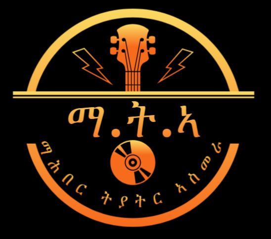
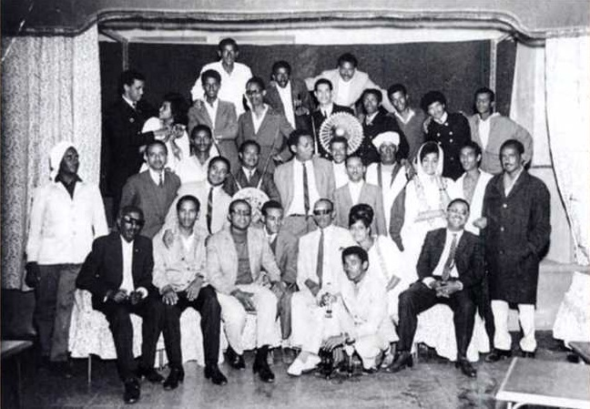
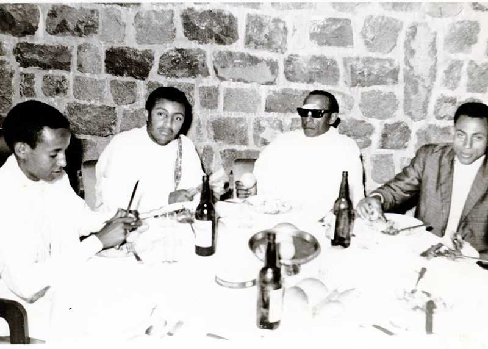
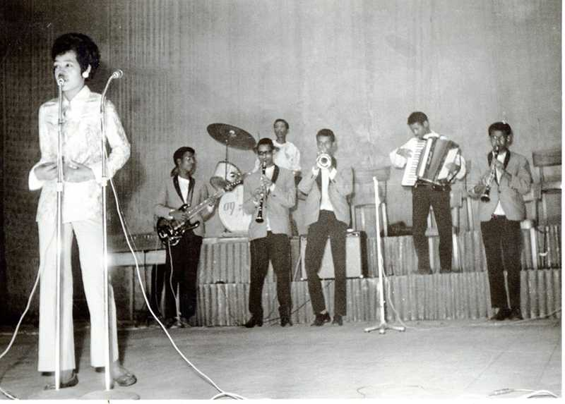
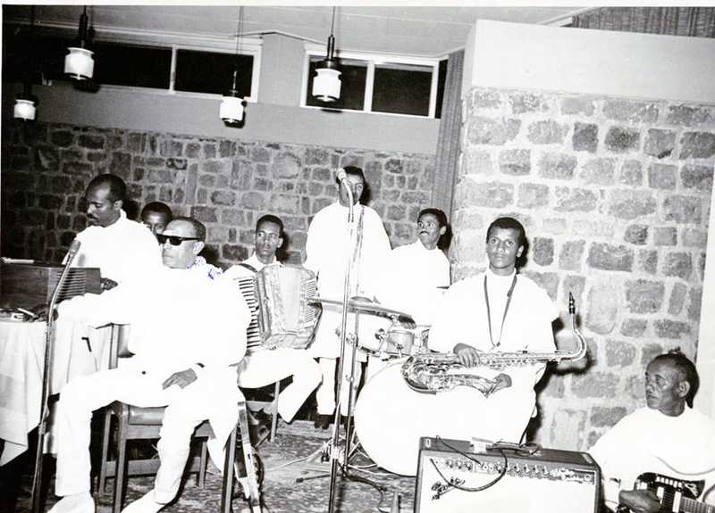

Home About Contact
Zantana — meaning our story in Tigrinya, the language of Eritrea — is an initiative to collect, archive, and share the personal stories of Eritreans wherever they are in the world. Our aim is simple: to give every individual life the dignity of being told on its own terms. Not as a statistic, not as a casualty of history, but as a full human being with a story worth hearing.
Eritrea has a history so vivid and so consequential that individual voices have often been absorbed into the collective narrative. The great upheavals — colonisation, the liberation struggle, displacement, independence — tend to be told as the movements of peoples, not of persons. In those sweeping accounts, the human being at the centre — with their fears, their triumphs, their quiet moments of grace — can get lost.
Zantana exists precisely because that loss matters. The personal journey is not a footnote to the historical event — it is the event, lived from the inside out. We believe that when we hear one person's story with honesty and care, we understand the world around it more deeply than any chronicle can offer.
| Mahber Theater Asmara | ||
|---|---|---|
| Artist Name | Song Title | Song |
| Osman Abdulrahim | ተፈታዊት ቆጽሊ | |
| Tberh Tesfahuney | እቲ ገዛና ኣብ ህድሞ ፥ ትዃን ቁንጪ መሊኦሞ | |
| by Tewolder Redda | ሽገይ ሃቡኒ | |
| Atewbrhan Segid | ዓደየ ዓደየ፡ በዓል መን'ዮም ዝጠለሙ | |


